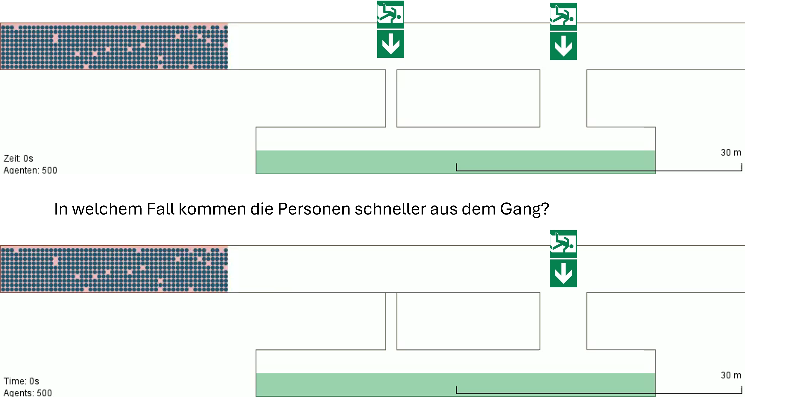
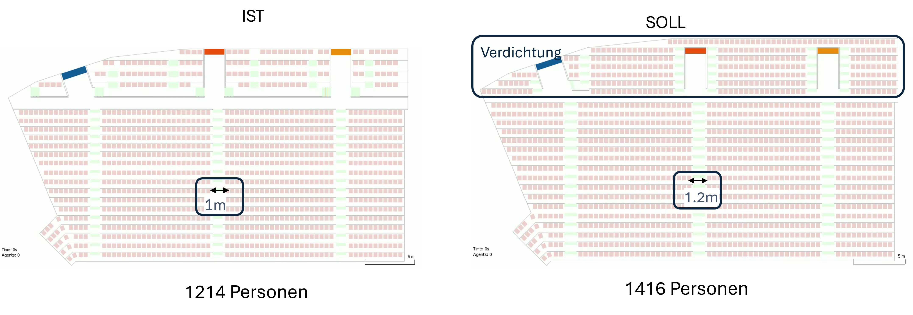
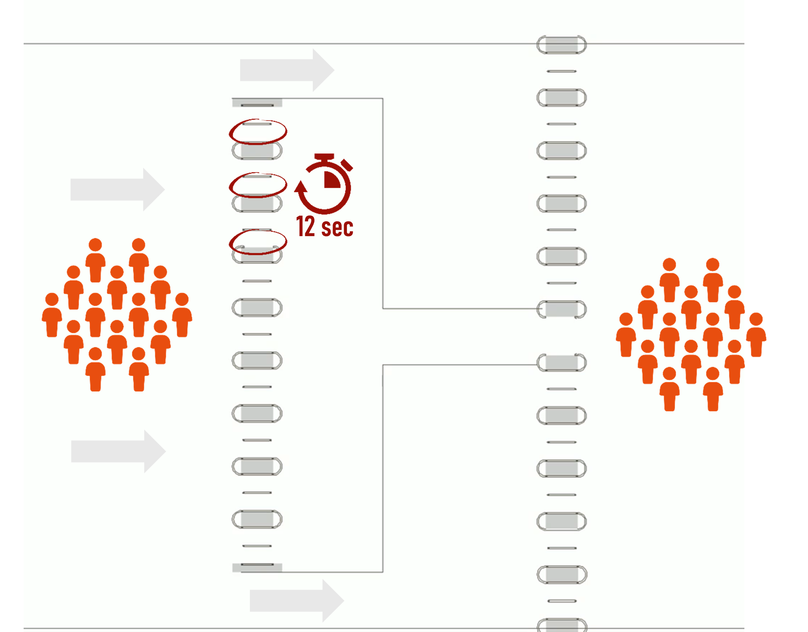

Personenstromsimulationen liefern oft Ergebnisse, die der Intuition widersprechen. Anhand von drei Beispielen können Sie selbst prüfen, wie gut sich das Verhalten von Menschenmengen abschätzen lässt – und wo eine Simulation neue Erkenntnisse liefert.
Klicken Sie auf die Antwortmöglichkeit, die Sie für richtig halten. Die Simulationsvideos und die Auflösung werden anschließend eingeblendet.
Zwei baugleiche Gänge werden geräumt.In einem Fall ist stehen beide Fluchtwege zur Verfügung, im anderen Fall ist der näherliegende Fluchtweg blockiert.
In welchem Fall kommen die Personen schneller aus dem Gang?

In der Abbildung ist ein Zuschauerrang in zwei Varianten zu sehen. Links (Zustand IST) hat der Rang eine Kapazität von 1214 Personen, mit einer Gangbreite von 1,0m. Rechts (Zustand SOLL) wurde die Kapazität des oberen Bereichs des Ranges erhöht und der Gang im unteren Bereich auf 1,2 m verbreitert.
In welchem Fall sind die Leute schneller draußen?

Bei einer Veranstaltung wird der Einlass über 38 parallele Sicherheitsschleusen abgewickelt. Jede Schleuse benötigt für den Security Check pro Person 12 Sekunden.
Wie viele Personen können 38 Schleusen in der Minute passieren?

So weit die Theorie. Aber stimmt das auch im tatsächlichen Ablauf? Wir überprüfen die Rechnung mit einer Simulation.
Es fehlen die Wechselzeiten.
Rechnet man die Wechselzeiten hinzu – also die Zeit, die zwischen zwei Kontrollvorgängen an einer Schleuse für Vor- und Nachrücken benötigt wird – kommt man im Durchschnitt auf eine gesamte Interaktionszeit von ca. 15 Sekunden statt 12 Sekunden. Solche Details werden in einfachen Handrechnungen leicht übersehen; die Simulation macht sie sichtbar.